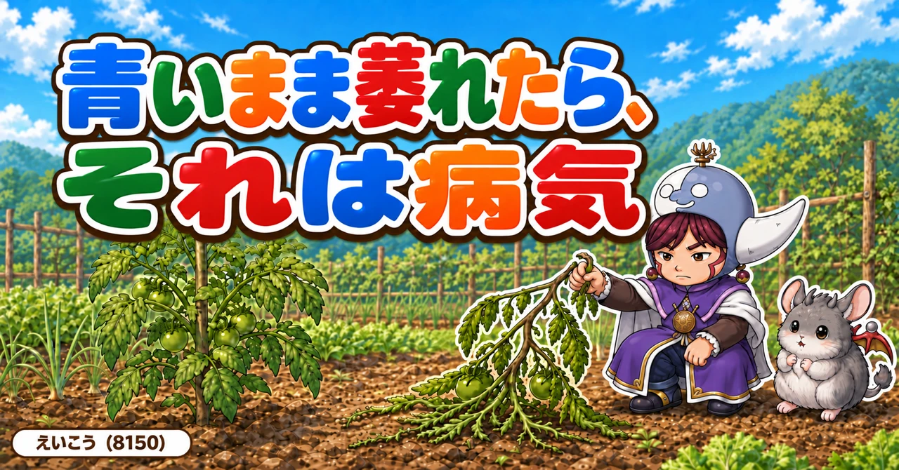
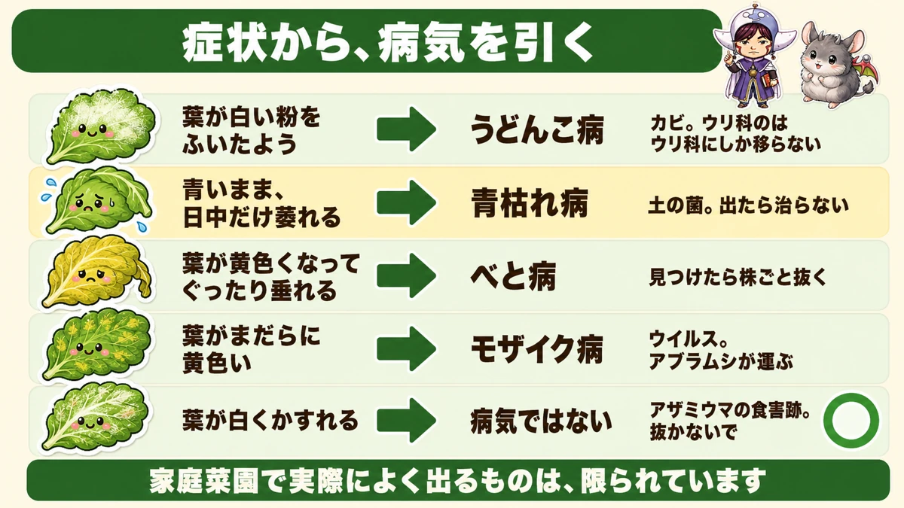
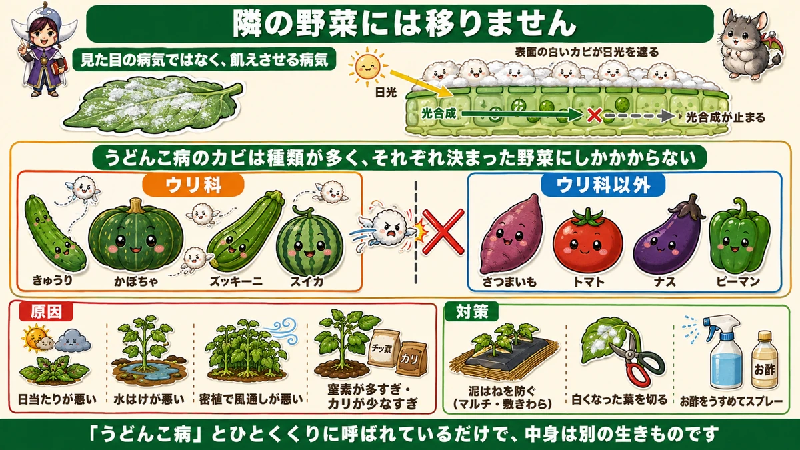
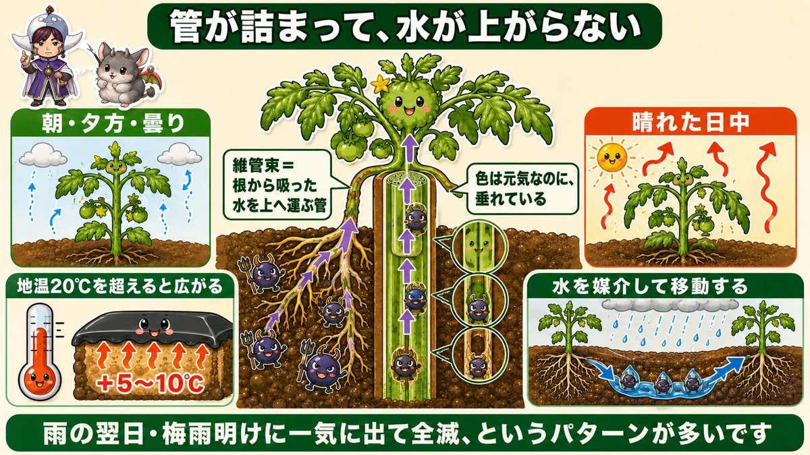
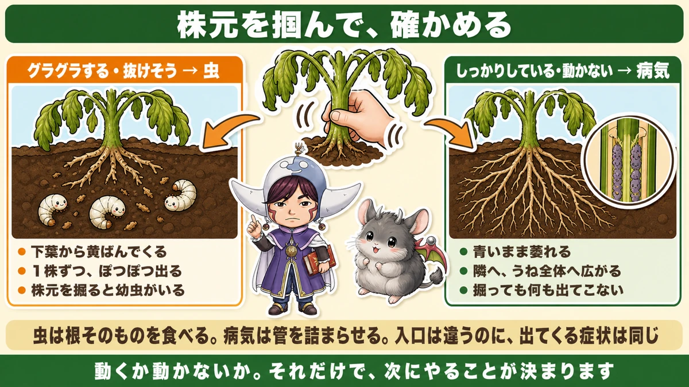

野菜の病気を見分ける観察帳｜白い葉・しおれ・腐敗の対処

どうも、8150（えいこう）です🌱 家庭菜園歴8年、理科の教員免許を持っていて、有機・無農薬で野菜を育てています。
📖 この記事の目次
この記事で分かること
- 病気の候補を探すときは、野菜の名前、変化した場所、葉の色、時間帯、周囲への広がりを組み合わせます。
- 白い粉ならうどんこ病、緑を保ったしおれなら青枯れ病などが候補になります。ただし、見た目の一つだけで決めません。
- きゅうりの黄色い模様と、玉ねぎの腐敗は、同じべと病の説明でも観察する場所が違います。
- 葉を切る、枝を外す、株を抜くの判断は、症状の範囲と新しい葉の状態で分けます。葉の緑が戻っても、病気が消えたとは限りません。
- 発見後の作業では、道具、手袋、土、水、切り取った葉を通して、別の株に持ち込まないことを優先します。
- 水やりや剪定の説明が違うときは、作物、植え付けからの段階、土の乾湿をそろえて読みます。
「葉が黄色い。これはもう抜かなあかんのかな」。畑でこういう迷いが出たとき、病名の一覧だけではなかなか作業を選べませんよね。黄色い葉には病気以外の理由もありますし、緑色の葉でも株の中で問題が進んでいることがあります。
このページは、気になる株を前にして使う観察帳です。いま症状が出ているなら『失敗の見分け方』へ。これから苗を植えるなら『作業の手順』から読むと、次にやることが見つかります。全部の病名を暗記する必要はありません☺️
大切なのは、『見えたこと』と『考えた原因』を分けることです。例えば「昼に葉が垂れた」は観察。「青枯れ病かもしれない」は候補。この二つを別々に残しておくと、夕方の様子や根の状態を見て考え直せます。最初の予想を当てる競争ではないので、途中で判断が変わっても大丈夫です。
虫を見つけたら病気の可能性が消える、というわけでもありません。根の食害と感染が重なる可能性もあります。『虫か病気か』を入り口にしても、最後まで二択のまま押し切らないこと。ここを押さえておくと、残すべき株を早まって抜くことと、危ない株を放置することの両方を減らせます。
早見：病気を見分ける観察項目と時期の目安
症状から選ぶ、最初の確認先
- 葉の面に粉のような白さ：うどんこ病を候補にします。葉先の白さや、食害によるかすれとは分けて見ます。
- きゅうりの葉に黄色い角ばった模様：べと病の候補です。黄色という色だけでなく、模様の区切られ方を見ます。
- きゅうりの葉に丸い斑点があり、傷んだ部分が穴になる：炭疽病の説明と照らします。最初から穴だけ見えた場合は虫の跡も調べます。
- スイカに黒く傷む部分、ざらつき、崩れるような変化：炭疽病が候補になります。葉と実の両方を確認します。
- ピーマンの実が変色し、柔らかく腐る：炭疽病や疫病などが考えられます。黒い実だけで病名を一つに絞りません。
- 葉の緑が残っているのに、晴れた昼間にしおれる：青枯れ病を含め、水が葉まで届かない原因を探します。朝夕の姿、土の湿り、根の傷みも確認します。
- ナスの片側が弱り、朝夕にも元に戻らない：半身萎凋病が候補になります。片側という特徴だけで確定せず、弱っている枝と残る枝を比べます。
- 白菜の地面に近い葉の付け根が柔らかく腐り、においもある：軟腐病の説明と照らします。葉の色だけより、腐敗している場所と状態が手掛かりです。
- 葉にまだら模様が出て、新しい葉にも変化がある：モザイク病を候補にします。葉裏や成長点、アブラムシの痕跡も調べます。

この早見は、次に見る場所を選ぶためのものです。例えば『白い』でも、粉が広がる白さ、こすれたような白さ、葉先だけの白さでは話が違います。図と似ていると感じたら、そこから株全体の観察へ進んでください。
病気と決める前に、こちらも確認
- ニンニクの黄化：寒さ、肥料、水分の過不足も候補です。古い葉だけなのか、中心の新しい葉まで弱いのかを見ます。
- ニンニクや玉ねぎの白いかすれ：虫の食害として説明される症状があります。粉のような白さとは区別します。
- 玉ねぎ苗の先端の白さ：種の殻が外れた後の姿として説明される場合があります。先だけを見て病気と扱わないようにします。
- きゅうりの双葉の黄化：成長に伴う自然な変化の場合があります。本葉と株全体の元気さを合わせて見ます。
- 玉ねぎが倒れた：収穫が近いサインと、傷んで倒れた状態を分けます。折れた場所が黒くなっていないか、柔らかく腐っていないかも確認します。
季節と数字は、見回りを増やす目安
病気の話に出る温度や月は、栽培の日程表のように使わないことが大切です。日付が来たら全株が発病するわけでも、目安より涼しいなら安心というわけでもありません。
- うどんこ病の観察時期：5〜11月という広い説明があります。春に一度見たら終わりにせず、苗の購入時、葉が混んだ時期、収穫終盤にも確認します。
- うどんこ病の広がる場面：雨の続いた後の晴天を重く見る説明と、乾燥時の発生・湿度が高い場所での拡大を分ける説明があります。天気一つで安全とは決めません。
- 青枯れ病と温度：地温が20℃を超えることを目安にする説明があります。ただし、別の説明では気温や土の温度の扱いが違います。畑全体に共通する発病の境目にはしません。
- 青枯れ病と雨：水の移動と、その後のしおれの広がりを確認します。雨の後は水の通った場所と近くの株を見ます。
- 玉ねぎのべと病：冬から春への変化、春の発生、収穫前の傷みなど、栽培段階の違う説明があります。地域や植えた時期を外して、全国共通の発生月にはまとめません。
- モザイク病で収穫を待つ期間：半月〜1か月ほど延ばせば芋の肥大が進むのでは、という試みがあります。これは期待としての期間で、回復や増収までの日数を約束するものではありません。
病気の章だからといって、株間、うね幅、連作をあける年数に共通の数字を入れることはできません。野菜によって葉の広がりも根の伸び方も違います。自分が育てる作物の栽培条件に戻り、風の通り道と病気の履歴を確認してください。
記録するのは、この五つ
- 野菜の種類と、気になった株の位置
- 最初に変化を見つけた日と時間帯
- 古葉、新葉、枝、実、株元のどこに出たか
- 直前の雨、水やり、剪定、倒れたことの有無
- 同じ作物の近くの株にも出ているか
細かい栽培日誌を完成させようとすると、畑よりノートの世話が忙しくなります(笑)。最初はこの五つで十分です。写真を残すなら、模様の近くと株全体の二つをそろえると、後から範囲を比べやすくなります。
作業の手順（発見前から片づけまで）
①苗を入れる前に、畑と苗を確認する
- 前に何を育て、どの場所に病気らしい症状が出たかを振り返ります。
- 雨がたまる場所、土が流れる向き、葉が重なりそうな場所を見ます。
- 苗の葉を見て、白い点や模様、しおれが気にならないか確認します。
- 葉が成長した後にも風が通り、株元を見に行ける配置にします。
- 接ぎ木苗を選ぶなら、どの病気への対応を想定した苗なのかを表示で確かめます。
元気な苗を入れることと、植えた後の環境を整えることは、どちらも必要です。すでに白い点が出ている苗を「植えたら何とかなるやろ」と選ぶより、購入前に立ち止まるほうが作業は少なくて済みます。
接ぎ木という言葉も、お守りのように扱わないでください。接ぎ木苗を使った栽培でも病気が出る例があります。苗の表示で期待できる範囲を確かめ、植える場所や道具の扱いも続けます。苗に任せられる部分と、自分が整える部分がある、という考え方です。
②元気な時期に、葉と地面の間を整える
- 株元の草や、作物に重なる周囲の植物を確認します。
- 作物の育て方に合わせ、古葉や不要な葉で混み合った場所を整理します。
- 葉や枝が地面へ倒れ込まないよう、支えや誘引の状態を見直します。
- 泥が葉に跳ねやすい場所は、地面の覆い方を見直します。
- うねや通路に水が滞るなら、排水の道がふさがっていないか調べます。
葉の整理は『たくさん切れば予防になる』という競争ではありません。残った葉が実を育てる仕事をします。切る量を別の野菜から借りず、株の大きさ、新しい葉の数、実が付いている場所を見て進めてください。
周囲の植物も見ておくと、通気の詰まりに気づけます。野菜の枝はすっきりしていても、隣の植物が覆いかぶさっていたら空気は通りにくいですよね。相性のよい植物を植えたつもりでも、混み合ったままでよいとは限りません。
③異変を見つけたら、切る前に観察する
- 最初に、気になる株全体を見ます。葉だけか、実や株元まで変化しているかを確かめます。
- 葉の変化が古い葉に限られるか、新しい葉にもあるかを比べます。
- しおれなら時間帯と天気を記録し、土が乾いているか湿っているかも見ます。
- 近くの同じ作物に似た変化があるか確認します。
- 切ったり掘ったりする前に、見えた範囲を残します。
ここでやりがちなのが、黄色い葉を全部取ってから原因を調べること。見た目は片づきますが、どこから始まったのか分かりにくくなります。先に観察、それから処理。この順でいきましょう。
しおれたからといって、すぐ水を追加するのも待ってください。根や水の通り道に不調がある株は、土に水があっても葉へ届きません。すでに湿った土へ足し続けると、乾燥を直すつもりで別の条件を悪くしてしまいます。
④葉・枝・株のどの範囲を扱うか決める
- 葉の一部に限られ、ほかに健全な葉がある場合は、症状のある部分への対応を考えます。
- 一つの枝にまとまっている場合は、枝単位での除去が適するかを見ます。
- 新葉を含め株全体へ進んでいる場合は、葉だけを取って待つ判断を見直します。
- 青枯れ病などが強く疑われる株は、残すことによる周囲への影響も考え、抜き取りを優先する説明と照らします。
- 判断しにくい場合は、作物名、株全体と症状の写真、発見日、土の状態をそろえて相談します。
病気ごとに、できることの範囲は違います。白い葉が一枚ある株と、水の通り道を傷めて全体がしおれた株を、同じ『葉を切って様子見』にはしません。
収穫まで少しだから残したい、という迷いもあります。その場合にも、収穫の見込みだけを見ず、他株への影響と新しい症状を確認してください。残す選択をした後に、全体への進行や近隣株の異変が出たら、最初の判断を更新します。
⑤道具と手の扱いを、株を移る前に区切る
- 症状のある株を切った道具で、そのまま健全な株の作業を続けません。
- ハサミやスコップに付いた土などの汚れを落とします。
- 道具を拭き、除菌の工程まで済ませてから次の作業へ移ります。
- 病葉や病果に触れた手袋も、そのまま別の株に触れる流れを避けます。
- 作業後に洗うつもりで進めず、別の株へ移る手前で処理を区切ります。
汚れを落とす工程と除菌は、同じ意味ではありません。刃がぱっと見で光っていても、切った汁や土を別の株へ運ぶことがあります。逆に、土が付いたまま何かを吹きかけたら、それで十分というわけでもありません。
この材料から、すべての病原体に共通する薬液の濃度や時間までは決められません。『アルコールで一度拭けば何でも防げる』とも言い切れません。病気と道具に合う方法を確認しながら、まずは汚れた道具を持ったまま次の株へ進まない流れを作ってください。
⑥病葉や抜いた株を、畑へ散らさず片づける
- 切った葉や実を、健全な株の根元へ投げ置かないようにします。
- 株を外すときは、周囲へ土が散らない扱いを考えます。
- 運ぶときも、病葉や付いた土を通路や別のうねに落とさないようにします。
- 病気の残りを、普通の堆肥の材料へすぐ戻す流れは避けます。
- 症状が出た位置を記録し、次の見回りと作付けの判断に使います。
根をどこまで取り除くかは、隣の株の根の位置にも関わります。近くに同じナス科の株がある条件で、根をすぐ掘り返さず、後に処理するという説明もあります。これは『病気の根は残してよい』という共通ルールではありません。周囲を大きく掘る前に、何を傷つけ、土をどこへ動かすかを見てください。
残りを分解することと、病原体を無害にすることも別です。葉が土へ戻って見えなくなっただけでは、次の栽培で安全とは判断できません。家庭の堆肥で病気の材料まで確実に処理できる条件は、このページでは設定していません。
⑦処理の後は、新葉と周囲を見直す
- 残した株に新しい症状が出ていないかを確認します。
- 同じ作物の隣株を、最初に見たときと比べます。
- 雨の後は、水が動いた場所や泥の付着を確認します。
- 葉が緑に戻っても、実や芋の育ちまで改善したかを別に見ます。
- 次に植える場所を決める前に、今回の症状の位置と経過を振り返ります。
一度葉を取って終わりではなく、その後の姿で対応を選び直します。切った日の写真だけでは、効いたのか、広がりが一時止まったのか、新葉が育っただけなのかを分けにくいんですよね。後の写真も同じ場所から残すと比較に使えます。
失敗の見分け方（症状→原因→やること）
葉の表面が、粉を置いたように白い
- 症状：葉の面に白い部分ができ、別の葉や新しい場所へ増えていきます。
- 考えられる原因：うどんこ病が候補です。葉先だけの白さや、虫に吸われてかすれた跡とは分けます。
- やること：症状のある葉の範囲、健全な葉、新葉の有無を確かめ、混み合いを整えます。局所の処理で済むか、株全体への対応が必要かを判断します。

白い部分が出たときは、その葉だけに視線が吸い寄せられます。でも、株を少し離れて見ると、違う情報が出てきます。下の古葉に限られているのか、上の新葉も白いのか。残る葉で実を育てられそうか。ここが処理の範囲を考える手掛かりです。
白い葉を全部取れば、すべて解決するとは限りません。葉の多くが傷んでいる株で一気に切ると、実を育てる葉まで少なくなります。新しい葉へ収穫を任せる説明と、株全体の感染で撤去する説明は、株の状態が違います。
「隣の野菜も全部同じように白くなるのでは」と感じるかもしれません。うどんこ病には複数の病原菌があり、同じ名前だからすべての作物へ一様に移る、と扱う必要はありません。一方で、『科が違うから何も見なくてよい』とも決めず、作物ごとに症状を確認します。
きゅうりの葉に、黄色い角ばった模様がある
- 症状：葉に黄色い部分ができ、その形が丸というより角ばった区切りに見えます。
- 考えられる原因：べと病を候補にします。この形の説明はきゅうりの観察例で、別の野菜にも同じ形が必ず出るとはしません。
- やること：模様の位置と増え方、新しい葉への広がりを確認します。葉が重なる場所、湿りが残る場所、株元の草、排水の状態を見直します。
黄色い葉を見て、すぐ肥料不足と決めるのは待ってください。葉全体が同じように薄いのか、特定の模様として出ているのかを見ます。模様がある葉と無い葉を比べると、変化の範囲を整理しやすくなります。
ここで玉ねぎの腐敗の説明を持って来ても、きゅうりの葉の判断は進みません。同じべと病という候補でも、作物が違えば見る部位や経過も違います。病名に合わせて症状を探すより、育てている野菜の症状から順に考えてください。
きゅうりの葉に丸い点ができ、後から穴が開く
- 症状：点状の変化があり、傷んだところが抜けて穴になる経過が見えます。
- 考えられる原因：炭疽病の説明に出る形です。ただし、穴があるだけでは虫の食害と区別できません。
- やること：穴の周囲に斑点があるか、ほかの葉にも点が増えているかを確認します。葉裏や株元の虫も調べ、病気だけを探す見方に偏らないようにします。
虫が食べたのか、傷んだ葉の組織が落ちたのか。出来上がった穴だけだと、ここが分かりにくいんですよね。穴になる前の点が残っている葉を探すと、経過を比べる材料になります。
病葉の処理に合わせて、雨滴や泥の跳ね、葉の重なりも見直します。処理した葉を地面へ置いたままにせず、別の株へ触れる道具も区切って扱います。穴を見つけるたびに葉を切るより、なぜ増えているのかを見ることが大切です。
スイカの葉や実が黒く傷み、ざらつく
- 症状：黒く変わった部分にざらつきがあり、組織が崩れるような変化も見られます。
- 考えられる原因：炭疽病として説明される観察例があります。実だけでなく、葉の症状と雨の後の経過も合わせます。
- やること：症状のある部分を記録し、健全な部分へ作業で持ち込まないようにします。株元の混み合い、雨滴の影響、覆いの中の換気も確認します。
葉が傷み始めた時期と、実に変化を見つけた時期を分けておくと、広がり方を追いやすくなります。「実が黒い」と一言で残すより、葉にも変化があったかを添えておきましょう。
初期の株元を整える作業と、実まで傷んだ株の対応は別です。苗の段階の葉の整理を、そのまま重症株の治療に置き換えないでください。トンネルの換気をよくする話も、すでに傷んだ実が元へ戻るという意味ではありません。
ピーマンの実に変色があり、中心が柔らかい
- 症状：実の側面が変色し、周りが黒く縁取られ、中心が柔らかくなっているような変化があります。
- 考えられる原因：炭疽病や疫病が候補として挙げられています。外側の色だけで、一方へ確定する材料はありません。
- やること：葉だけの整理で終わらせず、病果への対応を考えます。病果を切った道具で、そのまま健全な実を収穫しないようにします。
柔らかくなった場所があれば、色の問題だけとして扱わないこと。実の内側まで進んでいる可能性があるという観察と、何の病気かという推測は分けます。
傷んだ部分を切れば食べられるかは、この症状の観察から判断できません。病果を外す栽培上の対応と、口に入れてよいかという判断を混ぜないでください。ここでは腐敗果の可食を保証せず、株と周囲を守る作業を整理します。
葉が緑色のまま、昼に垂れる
- 症状：緑の葉がしおれ、朝夕や曇った時間には姿が戻ることがあります。
- 考えられる原因：青枯れ病が候補です。根の食害など、水を取り込んで運ぶ過程の不調も考えます。
- やること：土の湿り、しおれる時間帯、根や株元の状態、隣株の変化を合わせて確認します。青枯れ病が強く疑われるなら、抜き取りを優先する方針で対応を検討します。

最初に確認したいのは「水をやったか」だけではなく、「土に水があるのに葉へ届いていないのか」です。湿った土でもしおれるなら、乾燥だけの説明では足りません。だから、葉と同時に土を見る必要があります。
株元の支えが弱い場合、根が傷んでいる可能性を調べる入口にはなります。でも、動けば虫、動かなければ青枯れ病と確定することはできません。虫による傷と病気が重なる可能性もあり、根を確認した結果も他の観察と一緒に使います。

この図は、根の状態も確認しようという入口として見てください。支えの強さだけを診断の答えにせず、葉色と時間帯、食害の有無、周囲での発生を重ねます。
昼にしおれた株が夕方しゃんとしても、それだけで病気の疑いが消えるわけではありません。時間によって水の必要量が変わり、限られた量でも足りるようになった可能性があります。朝の元気さだけを見て、前日の記録を捨てないようにしましょう。
ナスの一方の枝が枯れ、朝夕も戻らない
- 症状：株の片側が弱り、時間を変えて見ても回復しないような経過があります。
- 考えられる原因：半身萎凋病が候補です。今回の材料で扱えるのはナスのこの候補で、萎凋病全般の分類まで広げません。
- やること：片側の範囲、下葉と上葉の状態、全体への進行を確認します。抜き取りを基本とする説明と、疑い株を残した試みを条件付きで比較します。
『半身』という名前を知ると、片側の不調を見つけた瞬間に答えが出た気になりますよね。でも、どの枝から変化したのか、健全な葉がどれだけあるのかも見ます。病名の響きと一致しただけでは、処理を選ぶ材料として足りません。
茎の切断面の変色を観察する説明もありますが、それだけで病原体が確定する検査にはしません。確認のために何か所も切り、同じ刃で別の株へ進むことは避けます。観察のための作業が、新たな傷や持ち込みを増やさないようにしてください。
白菜の地際が柔らかくなり、腐敗臭がある
- 症状：地面に近い葉の付け根などが軟らかくなり、腐敗とにおいが出ています。
- 考えられる原因：軟腐病が候補です。ここでは、確かめられた部位と軟化の様子を重く見ます。
- やること：傷みの範囲と株全体の状態を確認し、作業傷や虫の食害、地面との接触を見直します。傷んだ株や葉を健全な株の周囲へ残す扱いは避けます。
葉の表側だけを見ていると、地面に接する部分の異変は後回しになります。外葉の付け根まで見て、普通の古葉の傷みと、柔らかく崩れる腐敗を分けてください。
この症状を、玉ねぎやニンニクの腐敗と同じ病名へまとめることはしません。腐るという現象が似ていても、作物と病気の候補は別です。色を一つ決めて判定するより、場所、硬さ、におい、進行の範囲を記録します。
葉の色がまだらで、新葉にも模様がある
- 症状：葉に点々やまだら模様が見られ、黄色や茶色への変化があります。
- 考えられる原因：モザイク病が候補です。葉の模様だけで確定せず、成長点と虫の痕跡も確認します。
- やること：アブラムシなどを調べ、触れた手袋や切った道具を別の株へ持ち込まないようにします。抜き取りを優先する説明に沿って、周囲への影響を考えます。
アリやてんとう虫を見つけたことは、虫を探すきっかけにはなります。ただし、これらがいたからモザイク病だという判定はできません。虫の存在、葉の症状、株の経過をそれぞれ残します。
新しく出た葉が緑でも、完全に治ったという結論には進まないでください。葉の見た目が戻った後、芋の数や大きさは改善しなかった結果もあります。育てたいものが葉なのか、実なのか、芋なのか。見るべき結果をそこで取り違えないことが大切です。
黄色い葉はあるが、中心は元気
- 症状：ニンニクの古葉や、きゅうりの双葉などに黄化があり、中心の新しい部分は育っています。
- 考えられる原因：自然な葉の変化、寒さ、水分や肥料の条件が候補になります。黄色という色だけで病気にはしません。
- やること：新葉、成長点、株全体を比べます。土の乾湿や時期も確認し、すぐ抜く、すぐ追肥する、のどちらにも飛びつかないようにします。
古い葉が一枚黄色い株と、中心まで弱った株では、判断が違います。まず中心を見てから外側へ。新しい葉が育っているかを確認するだけでも、観察の順がはっきりします。
病気ではなさそうと考えた場合も、最初の状態は残しておきます。後から新葉にも症状が出たり、周囲へ増えたりしたら見直すためです。「病気かも」という心配を消すことより、次の変化に気づけることを目指しましょう。
説明が分かれていること
うどんこ病は、乾燥と湿気のどちらに注意するのか
- Aという説明：長雨が終わり、晴れたときの広がりを重く見ます。
- Bという説明：乾いた条件での発生と、湿度が高い場所での拡大を分けて考えます。
- どう考えればよいか：発生を見つける場面と、すでにある症状が広がる場面をそろえて読みます。晴れだから安全、雨だから安全とは決めません。
天気予報の一語で判断するより、葉の周りを見るほうが作業につながります。畑の外は風があっても、重なった葉の内側は空気が動きにくい場合があります。雨の後には混み合いを、晴れた後にも新しい白い部分を確認してください。
どちらの説明でも、自分の株の観察を省いてよい理由にはなりません。今日の天気が説明と違っていても、目の前に白い部分が増えているなら、その変化を基に対応します。
青枯れ病は、何℃から警戒すればよいのか
- Aという説明：地面の温度が20℃を超えることを一つの目安にしています。
- Bという説明：気温や土壌温度を扱い、病気の動きやすさ、発生、広がりを違う言い方で説明しています。
- どう考えればよいか：数字の前に、何の温度かを確認します。菌の活動と株の発病も同じ出来事ではないため、ひとつの境目へ丸めません。
天気予報に出る気温を、そのまま根のいる場所の温度として使うのは難しいんですよね。地面を覆っているか、日が当たるか、測る深さがどこかでも条件は変わります。暖かくなる時期は雨の後も含めて見回りを増やす、という使い方が実用的です。
数字以下なら見なくてよい、という使い方は避けます。しおれが出たら、温度が目安に届くかどうかより、葉色、時間帯、土、周囲の株を確認します。
病気が疑われるナスは、抜くのか残すのか
- Aという説明：発病した株は抜き、畑の土へ戻さない方針です。
- Bという説明：半身萎凋病のような症状があるナスに、更新剪定を試す例があります。
- どう考えればよいか：確定した病気への対応と、疑いのある株での回復の試みを分けます。更新剪定で完治するという結果は示されていません。
残す試みには、すべての病気が治るわけではないという前置きがあります。これを外して『ナスの病気は切れば復活する』と読むと、周囲への影響を見落とします。反対に、症状の種類を調べず、片側の弱りだけですべて同じ病気と扱うことも避けます。
判断の中心に置くのは、疑いの強さ、株全体の進行、健全な葉、近くの株への影響です。作業を選んだ後も、状態が変われば見直します。残すこと自体が成功ではなく、その後の結果まで見て初めて評価できます。
モザイク病の葉を取れば、収穫を増やせるのか
- Aという説明：症状葉を外し、半月〜1か月ほど栽培を延ばせば、芋が育つかもしれないという期待があります。
- Bという説明：実際に期間を延ばした結果では、葉の緑は戻ったものの、芋は増えず、大きくもならなかったとされています。
- どう考えればよいか：試す前の期待と、試した後の収穫結果を別々に扱います。緑の葉が出たことを、治癒や増収の証拠にはしません。
この違いは、対策を読むときにかなり大事です。「新芽が出た」という途中の変化と、「目当ての芋が育った」という最終結果は別。途中経過の写真だけで、効いた方法と決めないようにしましょう。
感染が疑われた株の種芋を、次の年へ回さないという説明もあります。その年の収穫を少し待つ判断と、翌年の増やす材料に使う判断は分けます。見た目がよくなったから次へ引き継げる、とは考えません。
太陽熱消毒をすれば、次は病気が出ないのか
- Aという説明：夏の太陽熱を利用して、土の病原菌を減らす方法があります。
- Bという説明：土の深い場所まで十分に処理するのは難しく、完全に発病を防ぐことはできないという説明があります。
- どう考えればよいか：土を温める処理と、根の届く範囲すべてで病原体が消えたことを区別します。表面付近の温度だけを、土全体の保証値にしません。
処理の前に耕す作業と、処理後に深く耕す作業も同じではありません。消毒の後には、深い土をすぐ持ち上げないという説明があります。『一度やったから、後は好きに動かしてよい』とは読まないことです。
この材料では、自分の畑の深さ別の温度や、全病原体に共通する必要期間までは設定できません。次の栽培では病気の履歴を残し、苗、場所、土や水の移動も含めて予防を考えます。
水やりを減らす話と、乾燥時に与える話は矛盾するのか
- Aという説明：根が畑へなじんだ後は、追加の水やりを控える方針があります。
- Bという説明：植え付け直後や、作物・栽培後半の条件、極端な乾燥では水を与える話があります。
- どう考えればよいか：作物、植えた後の段階、土の乾き方をそろえて判断します。いつでも水を足す、いつでも水を止める、の一律ルールにはしません。
病気を恐れて水を止めた結果、必要な時期まで乾かしてしまうのは避けたいところです。しおれた株へ足し続ける判断と同じように、極端な反対側へ振り切らないようにします。
葉の状態と土の状態はセットで見ます。十分湿っているのにしおれる場合と、土が極端に乾いた場合では、最初に調べることが違います。「病気対策の水やり」という言葉だけで作業を決めず、目の前の条件へ戻してください。
よくある質問
葉が黄色ければ、病気として抜きますか
黄色だけでは決めません。古葉や双葉の自然な変化、寒さ、水分や肥料の条件も候補です。中心の新葉が育っているか、模様として出ているか、周囲へ増えているかを合わせて見ます。
夕方には元気なら、青枯れ病ではないですか
夕方に戻る経過は、青枯れ病の説明にも出てきます。涼しい時間だけ水の供給が追いついた可能性があるので、昼のしおれを記録に残します。土の湿りと、近くの株の変化も確認してください。
株元を揺らせば、虫と病気が分かりますか
根の支えを確認する手掛かりにはなりますが、確定の方法ではありません。根の食害と病気が重なる可能性もあります。力任せに揺らさず、葉色、時間帯、根の状態、広がり方を合わせて考えます。
茎の断面や樹液を見れば、病名が決まりますか
変色や樹液の観察は材料になりますが、このページでは確定検査として扱いません。確認のために切った刃を、別の株へそのまま使うことも避けます。判断が難しいときは、観察記録をそろえて相談します。
うどんこ病が出たら、畑の野菜を全部抜きますか
同じ病名でも病原菌には違いがあり、すべての野菜が一律に感染するとは考えません。まず症状の出た作物と範囲を確認します。同じ作物の周囲を見つつ、別の野菜もそれぞれの症状で判断してください。
白い葉は、何枚までなら切ってよいですか
全作物に共通する枚数はありません。健全な葉と新葉の数、症状の範囲、実を育てる段階を見て考えます。株全体に広がった場合は、葉を一枚ずつ取る対応だけでよいかを見直します。
お酢や重曹などを、自己流で使ってよいですか
このページでは、自作液の配合や散布の手順は設定しません。材料の中に登場しても、濃さや使う条件を飛ばした共通対策にはできないためです。まず観察、混み合いの改善、病葉と道具の扱いを整えます。
農薬を使わなければ、できる対策はありませんか
苗の確認、通気や排水の改善、病気の部分の処理、道具で持ち込まない工夫はできます。ただし、どの病気も環境を直せば治るわけではありません。発病後に治療を期待できない株は、残すことの影響も考えます。
病葉を取った後に緑の葉が出たら、治ったと思ってよいですか
見た目の変化と病原体の消失は別です。モザイク病の試みでは、葉の緑が戻っても芋の育ちが改善しなかった結果があります。新葉だけでなく、株全体、収穫物、周囲の株も見ます。
収穫が近い株なら、しばらく残せますか
収穫前に延命を試す説明はありますが、回復や収量を保証する方法ではありません。残すことで周囲へ影響する可能性も考え、病気の候補と進み方を確認します。収穫まで近いことだけを理由に放置しないようにします。
抜いた病株は、堆肥に入れてよいですか
葉が分解されることと、病原体が無害になることは分けます。この材料では、家庭の堆肥で安全に処理できる温度や期間を決められません。畑へ戻す前提で混ぜず、土や病葉を散らさない片づけを優先します。
ハサミを拭くだけで、病気は防げますか
土や汁などを持ち込まないために、洗浄や拭き取り、除菌を区切って行います。ただし、すべての病原体に共通する効果は保証できません。作業後にまとめて処理するより、別の株へ移る前に扱いを整えます。
雨の日でも、病葉を取っておいたほうがよいですか
雨の日の芽かきや葉かきは、切り口が乾きにくいという理由で避ける説明があります。日常の葉の整理と、進行中の病株への対応は分けて判断します。濡れた条件で不要な傷を増やさないようにしてください。
病気が出た場所は、何年休ませればよいですか
この材料には、すべての作物と病気に共通する年数はありません。病気の候補、前作、場所の履歴を残し、次の苗や作物の選び方と合わせて考えます。年数だけを決めれば土や水の扱いは不要、とはしません。
写真を撮って相談するなら、どこを撮りますか
症状の近くと株全体をそろえ、作物名、発見日、時間帯、雨や水やりの状況を添えます。葉だけの写真では、根元や枝の範囲が伝わりません。写真で確定できるとは限りませんが、観察の材料を共有しやすくなります。
学ぶ：病気と植物のしくみ🔬
まとめ
剪定ばさみ
株ごとに拭くのが前提です。感染した株を切った汁が、そのまま次の株へ移ります。


敷きわら
病気の多くは、雨の泥はねで葉に上がります。地面を覆うのがいちばん確実です。
![[商品価格に関しましては、リンクが作成された時点と現時点で情報が変更されている場合がございます。]](https://hbb.afl.rakuten.co.jp/hgb/56bc2fb2.ff40a6e6.56bc2fb3.618f6a70/?me_id=1257026&item_id=10000211&pc=https%3A%2F%2Fthumbnail.image.rakuten.co.jp%2F%400_mall%2Fsharuka%2Fcabinet%2F09042254%2Fimgrc0081094692.jpg%3F_ex%3D240x240&s=240x240&t=picttext "[商品価格に関しましては、リンクが作成された時点と現時点で情報が変更されている場合がございます。]")
黒マルチ
同じ理由で泥はねを止めます。ただし地温が上がるので、青枯れ病が出た畑では慎重に。

不織布
雨よけの代わりに。風通しを保ったまま、雨が直接打ちつけるのを弱められます。
![[商品価格に関しましては、リンクが作成された時点と現時点で情報が変更されている場合がございます。]](https://hbb.afl.rakuten.co.jp/hgb/56bc237a.e97551b1.56bc237b.2513ed10/?me_id=1310260&item_id=10000879&pc=https%3A%2F%2Fthumbnail.image.rakuten.co.jp%2F%400_mall%2Fdiokasei%2Fcabinet%2F007fusyokufu%2F12g%2Fimgrc0092049705.jpg%3F_ex%3D240x240&s=240x240&t=picttext "[商品価格に関しましては、リンクが作成された時点と現時点で情報が変更されている場合がございます。]")